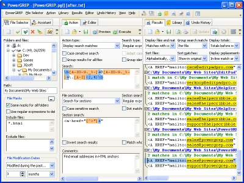

While all of PowerGREP's functionality is also available from the command line, the key benefit of PowerGREP over the traditional grep is its flexible and convenient graphical interface. Instead of just listing the matching lines, PowerGREP will also highlight the actual matches and make them clickable. When you click on a match, PowerGREP will load the file, with syntax coloring, allowing you to easily inspect the context of a match.
PowerGREP also provides a full-featured multi-line text editor box for composing the regular expression you want to use in your search.
PowerGREP's regex flavor supports all features of Perl 5, Java and .NET. Only the extensions that only make sense in a programming language are not available. All regex operators explained in the tutorial on this website are available in PowerGREP.
(continued below screen shot)

If you already have some experience with regular expressions, then you already know that searching and replacing with regular expressions and backreferences is a powerful way to maintain all sorts of text files. If not, I suggest you download a copy of PowerGREP and take a look at the examples in the help file.
One of the benefits of using PowerGREP for such tasks, is that you can preview the replacements, and inspect the context of the replacements, just like with the search function described above. Replace or revert individual matches in PowerGREP's full-featured file editor. Naturally, an undo feature is available as well.
Another benefit is PowerGREP's ability to work with regular expression sequences. You can specify as many search and replace operations as you want, to be executed together, one after the other, on the same files. Saving sequences that you use regularly into a PowerGREP action file will save you a lot of time.
PowerGREP's "collect" feature is a unique and useful variation on the traditional regular expression search. Instead of outputting the line on which a match was found, it will output the regex match itself, or a variation of it. This variation is a piece of text you can compose using backreferences, just like the replacement text for a search and replace. You can have the collected matches sorted, and have identical matches grouped together. This way you can compute simple statistics. The "collect" feature is most useful if you want to extract information from log files for which no specialized analysis software exists.
Most grep tools can work with only one regular expression at a time. With PowerGREP, you can use up to three sequences of any number of regular expressions. One sequence is the main search, search-and-replace or collect action. The other sequences are the file sectioning and extra processing. Use file sectioning to limit the main action to only certain parts of each file. Use extra processing to apply an extra search-and-replace to each individual search match.
If this sounds complicated, it isn't. In fact, you'll often be able to use far simpler regular expressions with PowerGREP. E.g. instead of creating a complicated regex to match an email address inside an HTML anchor tag, use a standard regex matching an email address as the search action, and a standard regex matching an HTML anchor tag for file sectioning.
PowerGREP works under Windows 95, 98, ME, NT4, 2000 and XP. For more information on PowerGREP, please visit www.powergrep.com. You can download the free evaluation version, and buy the full version for US$ 99. Not a bargain, but still very much worth its money.
Page URL: http://www.Regular-Expressions.info/powergrep.html
Last Updated: 07 April 2005
Copyright © 2003-2005 Jan Goyvaerts. All rights reserved.
| Regex Tools |
| grep |
| PowerGREP |
| RegexBuddy |
| General Applications |
| EditPad Pro |
| Languages & Libraries |
| Delphi |
| Java |
| JavaScript |
| .NET |
| PCRE |
| Perl |
| PHP |
| Python |
| Ruby |
| More Information |
| Introduction |
| Quick Start |
| Tutorial |
| Tools and Languages |
| Examples |
| Books |
| Reference |
| About This Site |
| Download and Print |